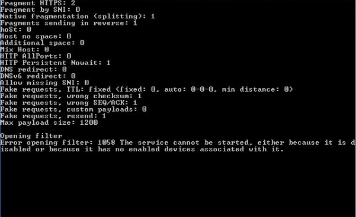

| Ник | Пост | Дата |
|---|---|---|
| CAXAP |  | 2024-09-15T10:53:53.992Z |
| Clubstep | Если это Windows 7, то на странице Goodbye DPI есть «Known issues», где написано, что WinDivert не совместим c Windows 7, и необходимо установить обновление KB3033929 для его работы. | 2024-09-15T15:50:24.660Z |
| jestxfot(YoutubeNotWork) |
Для тех кто не умеет искать (мало ли) https://www.catalog.update.microsoft.com/Search.aspx?q=KB3033929 | 2024-09-15T16:13:11.834Z |
| username1(name1) | Обновление не устанавливается, пишет, что оно уже установлено (а на самом деле нет). При попытке удалить это обновление через cmd, говорит, что оно не установлено. Что в таком случае делать? | 2024-09-20T07:29:37.344Z |
| manwithbox(manwithbox) | Винда - сборка? Там может стоять заглушка на этот апдейт. Ну то есть пакет якобы установлен для того чтобы система не ругалась, а по сути он пустой. Ищите в сети, как устанавливать и удалять пакеты вручную из системы. | 2024-09-20T08:16:07.896Z |
| TesterTi(TesterIt) | Попробуйте | 2024-09-20T11:01:46.514Z |